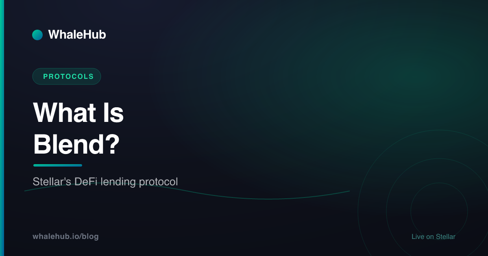

What Is Blend? Stellar's DeFi Lending Protocol

Blend is the lending layer of Stellar DeFi — a set of immutable Soroban smart contracts that let anyone create isolated lending pools, supply assets to earn interest, and borrow against collateral. Instead of one giant shared market, Blend gives each pool its own risk, its own oracle, and its own backstop insurance fund. This is a plain-English explainer of how it works and where it fits.
What is Blend?
Blend is a decentralised lending protocol on Stellar, built as a set of immutable Soroban smart contracts by Script3. It lets anyone create permissionless, isolated lending pools where users supply assets to earn interest and borrow against collateral, with each pool protected by its own backstop insurance fund.
Every mature DeFi ecosystem needs a money market — a place to lend idle assets for yield and to borrow against what you already hold. On Ethereum that role is played by protocols like Aave and Compound. On Stellar, Blend fills the same slot, but with a design tuned for the network's speed, low fees, and Soroban smart contracts.
The team behind Blend, Script3, describes it as a "universal liquidity protocol primitive." The word primitive matters: Blend isn't trying to be a single, curated market. It's a base layer that other builders assemble on top of. Anyone can spin up a lending pool, choose which assets it holds, and set its risk parameters — no gatekeeper, no governance vote required to launch.
If you're new to the wider ecosystem, our Stellar DeFi guide maps how lending, AMMs, and yield fit together. Blend is the borrowing-and-lending piece of that picture.
- What it is — a permissionless lending protocol on Stellar, built with Soroban.
- Who made it — Script3, shipped as immutable on-chain contracts.
- Core idea — isolated pools, each with its own risk and its own backstop fund.
- Why it matters — it's the money-market layer the rest of Stellar DeFi can build on.
How Blend works: pools, lending & borrowing
Blend organises everything into isolated lending pools. Suppliers deposit assets to earn interest and receive bTokens that track their share; borrowers post collateral and take out loans, receiving dTokens that track their debt. Each pool has a backstop fund that absorbs losses first, and interest rates move automatically with how heavily the pool is used.
Four building blocks do most of the work. Here's each one in plain terms.
Lending pools
A Blend pool is a self-contained market. When you supply an asset, you receive bTokens — a receipt that represents your slice of the pool and quietly grows in value as borrowers pay interest. Crucially, pools are isolated from one another. Your position in one pool is completely independent of every other pool, so unpaid loans, liquidations, or a broken price feed in one market can't bleed into the others. That containment is the single most important design choice in Blend.
Borrowing & collateral
To borrow, you deposit collateral and take a loan against it, receiving dTokens that track what you owe. How much you can borrow depends on two dials the pool creator sets: a collateral factor that discounts the value of what you post, and a liability factor that inflates the value of what you owe. Together they set a conservative borrow limit. This dual-factor approach lets one pool be cautious with a volatile asset and generous with a stable one — flexibility a single shared market struggles to offer.
The backstop module
Each pool has its own backstop fund that acts as first-loss capital. Backstop depositors supply an 80/20 BLND:USDC liquidity token and, in return, earn a "take rate" — a slice of the interest borrowers pay. If a position goes bad and leaves debt behind, that bad debt is transferred to the backstop, which auctions its holdings to cover the shortfall. Because a pool needs a healthy backstop to be trusted, this ties the insurers' incentives directly to the pool's safety. Withdrawals from the backstop enter a multi-day queue, which stops insurance capital from fleeing the moment stress appears.
Reactive interest rates
Rather than a fixed rate curve, Blend uses interest rates that react to demand. The model watches how far a pool's utilisation drifts from its target and nudges a rate modifier up or down to pull it back. If borrowing demand for an asset falls, rates ease automatically to attract borrowers; if a pool gets crowded, rates rise to draw in fresh supply and cool things off. The market self-corrects without waiting on a governance proposal — a meaningful advantage for capital efficiency.
Why Blend runs on Soroban
Blend is written for Soroban, Stellar's Rust-based smart-contract platform. Soroban lets Blend express real lending logic — pools, collateral factors, auctions, backstops — as on-chain programs, while inheriting Stellar's fast, low-cost settlement. Blend's contracts are also immutable, meaning the core logic can't be quietly changed after deployment.
Stellar's classic ledger was brilliant at moving assets but couldn't run arbitrary programmable logic. Soroban changed that. It brought a Rust-based, WebAssembly smart-contract engine to Stellar, so protocols like Blend can encode conditional, stateful rules — "only lend if collateral covers the loan," "auction this collateral if the borrower falls underwater" — directly on-chain.
Two Soroban properties matter especially for lending. First, immutability: Blend deploys its core contracts so they can't be upgraded out from under users, which removes a whole class of "the team changed the rules" risk. Second, composability: because everything is on-chain and open, other Stellar protocols — wallets, AMMs, aggregators — can plug into Blend without permission. A pool on Blend can quote in the same USDC that flows through Aquarius AMM pools, letting liquidity move fluidly across the ecosystem.
Blend vs other lending models
Most lending protocols pick one of three shapes: isolated pools, one large shared pool, or an order book that matches lenders and borrowers directly. Blend takes the isolated-pool route, so each market contains its own risk. The trade-off is that liquidity is spread across many pools instead of pooled into one deep market.
It helps to see the main models side by side. None is strictly "best" — each trades off safety, liquidity depth, and flexibility differently.
| Model | How it works | Trade-off |
|---|---|---|
| Isolated pools (Blend) | Each pool holds its own assets, oracle, and backstop; risk stays contained to that pool | Safer containment, but liquidity is fragmented across many pools |
| Shared pool (Aave-style) | Many assets sit in one large market that all borrowers and lenders draw from | Deep, efficient liquidity, but one risky asset can threaten the whole market |
| Order-book lending | Lenders and borrowers post rates and terms that are matched directly, peer to peer | Precise, fixed-term pricing, but can be illiquid and slower to fill |
Blend also differs from shared-pool designs in two other ways worth naming: permissionless pool creation (anyone can launch a market rather than lobbying a DAO to list an asset) and reactive rates that adjust without governance. The isolated-pool model is a deliberate answer to a painful lesson from earlier DeFi cycles — that a single toxic asset in a shared pool can drag everyone down with it.
Lending as a yield engine
Lending isn't only about earning interest — it's the raw material for leverage. By supplying an asset, borrowing against it, and redeploying the borrowed funds into a liquidity position, a strategy can amplify yield. Done carefully this boosts returns; done carelessly it magnifies losses and liquidation risk, so it demands real discipline.
Here's the core loop that lending unlocks. Suppose you hold an asset earning yield in a liquidity pool. You can also post it as collateral on a lending protocol, borrow a correlated asset, and route that borrowed capital back into more LP. Your yield-earning position is now larger than your starting capital — that's leverage. The same mechanics power "looping" strategies across DeFi, and lending protocols like Blend are the engine underneath them.
Flash liquidity takes this further. Because Blend's pools live on Soroban, capital can be borrowed and repaid inside carefully constructed transactions, opening the door to strategies that rebalance or leverage a position atomically. This is powerful, but it's also where risk concentrates: leverage cuts both ways, and a sharp price move can trigger liquidation faster than an un-levered position would.
This is exactly the territory WhaleHub is exploring. WhaleHub is a yield optimiser on Stellar, and we're researching leveraged LP strategies that could draw on Blend-style flash liquidity to amplify farming returns. To be clear: that work is in development. It is not live, not audited, and not a launched product — nothing here should be read as a promise of a specific integration or return. If you want the broader landscape first, our guides on Stellar yield farming and the best yield aggregators set the context for where leverage fits.
Risks to understand
Blend's isolated design contains risk, but it doesn't remove it. The main hazards are liquidation if your collateral falls, bad debt if a position can't be covered, oracle failure if a price feed is wrong, and smart-contract risk if code has a flaw. Understanding each one is the price of admission to any lending protocol.
- Liquidation risk. If your collateral value drops below the borrow limit, your position can be liquidated. Blend uses a gradual "gentle" Dutch auction that improves terms for the borrower over time, but you can still lose collateral. Borrowing well within your limit is the simplest defence.
- Bad debt. In extreme moves, a position may be worth less than what it owes. That shortfall flows to the pool's backstop fund, which auctions holdings to cover it — but a severely stressed pool can still leave suppliers exposed if the backstop is exhausted.
- Oracle risk. Every pool relies on a price feed to value collateral. A wrong, stale, or manipulated price can trigger unfair liquidations or let bad loans slip through. Because each pool picks its own oracle, oracle quality varies pool to pool.
- Smart-contract risk. Blend's contracts are immutable, which is a strength — but immutability also means a bug can't be hot-patched. As with all DeFi, code can contain flaws regardless of audits, and interacting with any protocol carries this risk.
The healthy way to read this list isn't "avoid Blend" — it's "assess each pool on its own." Isolated pools mean the answers to "which oracle? how deep is the backstop? how volatile is the collateral?" can differ sharply between two markets on the same protocol.
Getting started on Stellar DeFi
To use Stellar DeFi you need a Soroban-ready wallet, a little XLM for fees, and an asset like USDC to put to work. From there you can lend on a protocol like Blend, provide liquidity on an AMM, or let an optimiser compound rewards for you. Start small, read each protocol's docs, and understand the risks before committing size.
A sensible on-ramp looks like this. First, set up a wallet that supports Soroban and fund it with a small amount of XLM to cover transaction fees. Then acquire a working asset — USDC is the common denominator across most Stellar DeFi. Our Stellar DeFi guide walks the whole stack from wallets to protocols, and our yield-farming explainer covers how liquidity provision actually earns.
Where does WhaleHub fit into all this? WhaleHub isn't a lending protocol — it's a yield-optimization layer, sometimes described as "Convex for Stellar." You stake AQUA and receive BLUB, a liquid receipt token whose value floats with the market; the protocol aggregates ICE voting power on Aquarius and auto-compounds the rewards. It's a hands-off way to earn on the AQUA ecosystem, and it sits alongside — not in place of — money markets like Blend.
Blend's headline idea is simple: build the lending layer out of small, isolated, self-insuring pools instead of one giant market, and let rates and pool creation run permissionlessly. The detail is where the craft lives — bTokens and dTokens, collateral and liability factors, backstop auctions, reactive rates. If you remember "isolated pools, own backstop, reactive rates," you have the shape of Stellar's money market.
Frequently asked questions
What is Blend?
Blend is a decentralised lending protocol on Stellar, built as a set of immutable Soroban smart contracts by Script3. It lets anyone create permissionless, isolated lending pools where users supply assets to earn interest and borrow against collateral, with each pool protected by its own backstop insurance fund.
Is Blend safe?
Blend is designed around isolated pools and a backstop first-loss fund, so trouble in one pool cannot spread to others. But no DeFi protocol is risk-free — smart-contract bugs, oracle failures, liquidations, and bad debt are all possible. Treat every pool on its own risk merits and never deposit more than you can afford to lose.
What can you do with Blend on Stellar?
You can supply assets like USDC or XLM into a Blend pool to earn lending interest, or post collateral and borrow against it. Builders can spin up their own permissionless pools, and backstop depositors provide insurance capital in exchange for a share of borrower interest.
How is Blend different from Aave?
Aave mostly uses large shared pools where many assets sit together, so one risky asset can affect the whole market. Blend uses isolated pools that each carry their own risk, oracle, and backstop fund, plus permissionless pool creation and reactive interest rates that self-correct toward a target utilisation.
Does WhaleHub use Blend?
WhaleHub is a yield-optimization protocol on Stellar that stakes AQUA and auto-compounds Aquarius rewards. We are researching leveraged LP strategies that could draw on Blend-style flash liquidity, but that work is in development — it is not live, audited, or a launched product, and nothing here promises a specific integration.
WhaleHub is a yield-optimization protocol on Stellar. We stake AQUA, aggregate ICE voting power, and auto-compound Aquarius rewards for stakers. This series explains the Stellar DeFi stack — protocols, tokens, and strategies — in plain English.
Read more


Put Stellar's ecosystem to work
Money markets like Blend are one piece. WhaleHub is another — stake AQUA, get BLUB 1:1, and auto-compound Aquarius rewards, hands-off.
Launch the appThis article is for educational and informational purposes only and is general information, not financial, investment, or legal advice. Blend is a third-party protocol not operated by WhaleHub; descriptions of its mechanics may change as the protocol evolves. Any WhaleHub leveraged-strategy work referenced here is in development and is not live, audited, or a launched product. DeFi involves significant risk, including the potential total loss of capital. Do your own research and consult a qualified professional before making decisions.